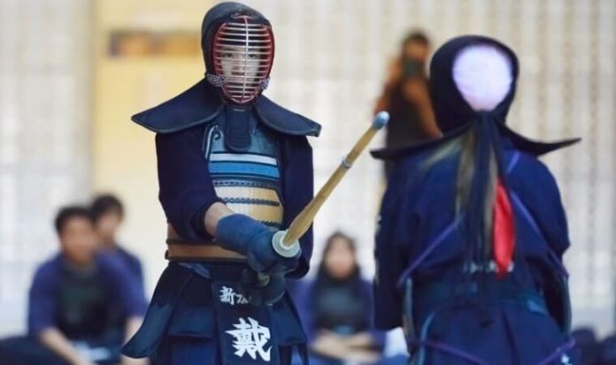
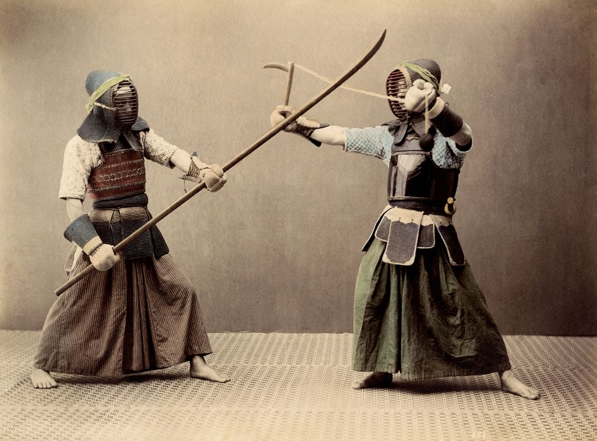
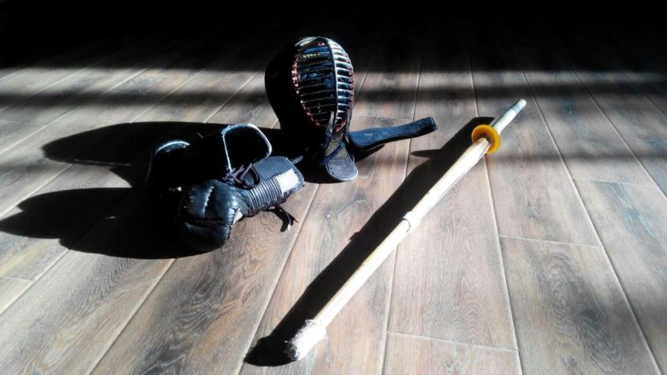

By: Admin
Jan 11, 2018

There seems to be a tendency amongst newer kenshi to lift the right foot too high when making fumikomi. This results in a seesaw motion and makes it difficult to equalise the balance between the feet and to bring the back foot up quickly in hikitsuke, ready for the next move.
There are lots of exercises designed to fix this fault, ranging from traditional footwork patterns up and down the dojo to lunges, with or without suburi. Some teachers use the idea of standing behind a line or court marking and throwing the right foot forwards as far as possible without moving the left. In this way they encourage the flexion of the right knee. As I mentioned before, there is currently a very strong focus being applied to the practise of kihon using suriashi, (sliding footwork).
By: Admin
Jan 19, 2018

Firstly apologies for taking my longest ever time out from writing this blog. A troublesome house move and both my wife and I running into some health problems slowed things down a bit.
2016 has been a year where my baby boomer generation lost many of its heroes. The list of famous people who passed away seemed long and relentless. We were by no means untouched in kendo with the sad loss of Chiba sensei and now Toda sensei.
I was fortunate enough to get to know Chiba sensei well enough to write about him when he passed away earlier this year. Toda sensei I knew less well but had met him a number of times in France at the annual Orleans Seminar and again in Japan and at several international taika. All Japan Champion at the age of 22, he was a one Japan’s leading jodan players, becoming a double hero in his 50s by switching to nito and spearheading its revival.
By: Admin
Feb 4, 2018

PKendo is a sport that places great importance on etiquette. A kendo contest begins with the contestants exchanging formal bows and ends with another exchange of courtesy. This courteous bow is called rei in Japanese. The motion expresses a person's wish for victory, respect to their instructors, and gratitude to the friends who practice with them.
People who practice kendo (sometimes called kendoists) are ranked according to ability and the length of time they have dedicated themselves to the sport. A beginner is ranked as seventh kyu, or rank. There are tests to pass when moving up to the next rank; after heading through sixth kyu, fifth kyu, and all the way up to first kyu, a kendoist moves into a new series: dan. Beginning Dan is the lowest of these, and it is followed by first Dan, second Dan, and so on. Tenth Dan is the highest rank possible in the world of kendo.